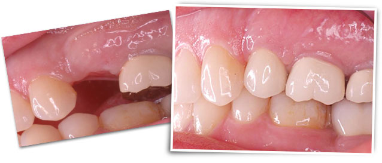

Smile with confidence!
Whether you’ve recently lost some or all of your natural teeth or have worn dentures for years, DIEM™ 2 or Teeth in a Day™ can help you regain your confidence and your smile.
This is a dental implant procedure that can have you smiling again with beautiful, natural-looking, non-removable teeth.
This amazing result can be achieved in just one visit and can instantly improve your quality of life.
Benefits of DIEM 2 or TEETH IN A DAY:
Finally, something to smile about. So, what are you waiting for?
Only your dentist can say for sure, but you may be a candidate for DIEM 2 if you:

Don’t wait – ask for an evaluation appointment to find out if you are a candidate for DIEM 2. Only your dentist can recommend the best treatment option available to replace your missing teeth.
Are there risks associated with dental implants?
While uncommon, complications can occur during and after surgery. Some complications include, but are not limited to, infection, blood clots, implant breakage, nerve injury, failure to integrate and loss of integration, any of which can require additional surgery. Although dental implant surgery is extremely successful in most cases, some patients still experience pain. Factors such as a patient’s post-surgery activities can affect the longevity of the dental implant. Be sure to discuss these and other risks with your dentist.